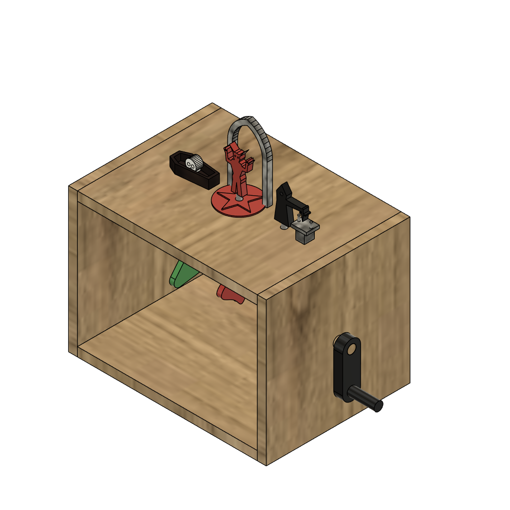

What story did you decide to tell?
At midnight, a hooded cultist stands before a candle-lit altar and begins the ritual. As the crank turns, the cultist rises and bows over the altar slab, and the ceremony takes hold. Under the gothic arch, a demon climbs out of the pentagram at the centre of the summoning circle, jerking upward one notch at a time. Across the stage a coffin lid has been left open, and a skull slowly lifts out of it to see who has disturbed its rest.
Each turn of the handle repeats the ritual: the cultist bows, the demon rises, and the skull peeks out, then everything sinks back down to wait for the next summoning.
The Fusion model

How it works
A single crank turns one camshaft that passes through both sides of the box. Three cams are fixed along the shaft. Each cam lifts a roller follower, whose rod slides through the top of the box and carries a figure.
| Cam | Position on shaft | Follower | Figure it moves | Scenery around it |
|---|---|---|---|---|
| Pear cam | 1.435 in | Roller, yoke and rod | Risen Skull | Coffin |
| “Satan’s Spine” cam | 2.685 in | Roller, yoke and rod | Demon | Summoning circle, pentagram, gothic arch |
| Snail cam | 3.935 in | Roller, yoke and rod | Hooded Cultist | Altar (pedestal, slab, candles) |
The box is built from four ¼ in panels (top, bottom, left side, right side), with the front and back left open so the mechanism can be seen.